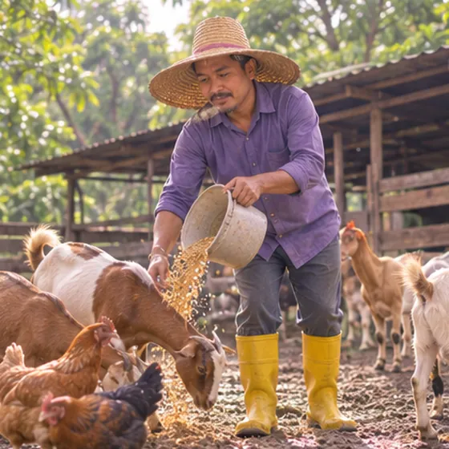

Brucellosis
A germ infection passed from animals to people, mostly by raw milk, raw meat or animal contact
What it is
Brucella germs spread from farm animals such as goats, sheep and cattle to people. They can cause fever that comes and goes, sweats and body aches that may last a long time.
- Whole body
- Raw milk or animal contact
- Fever, night sweats, aches
- Which doctor
- Family doctor; infectious disease doctor
- Common in
- Farm, slaughterhouse, vet and lab workers; people who drink raw milk
- Contagious
- Rarely between people; mostly caught from animals, raw milk or raw meat
- Course
- Can drag on for weeks or months and may come back; needs proper care from a doctor
Common signs

Fever, feeling hotFever (pyrexia) Soaking sweats at nightNight sweats 
Shivering with chillsChills (rigors) 
Aching all overMyalgia 
Tired all the timeFatigue 
Losing weight without tryingUnintentional weight loss
Why it happens
Unsafe food or waterFood- and water-borne 
Contact with animalsZoonotic exposure
Other causes
- Eating raw or undercooked meat from infected animals
- Breathing in germs in dust or air on farms, in slaughterhouses or in labs
- Very rarely from person to person, such as through breast milk or sex
See a doctor first if
- Fever with a stiff neck, very bad headache, confusion or fits: call 999 or go to hospital now
- Chest pain, trouble breathing, a racing heart or fainting: call 999
- Fever that lasts several days or keeps coming back after raw milk, raw meat or contact with animals
- A hot, swollen, painful joint, or back pain with fever
- Fever in a pregnant woman, a baby or an older person: see a doctor promptly
If any apply, please see a doctor before a session.
This page is general information. Please keep taking your normal medicine and keep seeing your doctor.
Keep taking your normal medicine and keep seeing your doctor. Our session is a gentle support and does not replace medical care.
Looking after yourself

Take medicine as your doctor saysMedication adherence 
Rest wellRest
More ways to look after yourself
- See a doctor early and mention any contact with farm animals, raw milk or raw meat
- Drink only pasteurised milk and eat dairy made from it; cook meat well
- If you work with animals, wear gloves and protective clothing, cover cuts and wash your hands well
Tell your therapist
- Fever or an active infection
- A heart condition
- A kidney or liver condition
- Pregnancy
Your therapist will go through this with you before starting.
Questions and answers
What is Brucellosis?
A germ infection passed from animals to people, mostly by raw milk, raw meat or animal contact. Brucella germs spread from farm animals such as goats, sheep and cattle to people. They can cause fever that comes and goes, sweats and body aches that may last a long time.
What are the common signs of Brucellosis?
Fever, feeling hot · Soaking sweats at night · Shivering with chills · Aching all over · Tired all the time · Losing weight without trying
Why does Brucellosis happen?
Unsafe food or water · Contact with animals
How can I look after myself with Brucellosis?
Take medicine as your doctor says · Rest well
Can an AI Body Master session help with Brucellosis?
A session is gentle, needle-free meridian support for your wellbeing. It does not treat or cure Brucellosis and never replaces your medicine or your doctor. Tell your therapist about it before the session starts.
Related conditions
References: General information based on public health sources such as Mayo Clinic, NHS, Cleveland Clinic and NCBI StatPearls.
Page updated: 2026-11-01